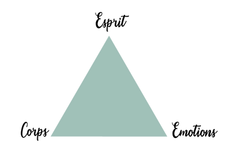

La sophrologie c'est quoi ?
Créée en 1960 par le neuropsychiatre Alfonso Caycedo, la sophrologie est une méthode psychocorporelle de développement personnel qui permet de retrouver un bien-être au quotidien et de développer son potentiel. "psychocorporelle" parce que cette méthode travaille sur le corps comme sur l'esprit. On parle aussi d'approche globale de l'individu.
De façon verbale et non tactile la sophrologie fait partie des thérapies brèves et s'appuie sur 3 leviers:
- le contrôle de la respiration
- la détente musculaire
- les visualisations positives ou suggestions mentales
La sophrologie, pour qui ?
Les enfants
Découverte de l'apprentissage et des sentiments, développement de la motricité, de la socialisation, de la communication ou encore structuration de la pensée… autant d'éléments qui jalonnent l'enfance. Dans cette période d'éveil et de découverte, la sophrologie permet à l'enfant de dépasser les difficultés personnelles qu'il peut rencontrer. Se recentrer, gérer ses émotions et être à l'écoute de soi sont des apprentissages qui resteront ensuite des outils précieux pour toute sa construction future. La sophrologie peut se pratiquer dès le plus jeune âge, car elle repose sur des exercices simples qui font appel à la créativité et l'imagination. Avec les enfants, les exercices de respiration et de relaxation sont amenés de manière ludique, par des jeux et des contes. Le temps de séance est aussi adapté, environ 45 minutes.
Les adolescent
L'adolescence est une étape majeure du développement de soi qui amène une remise en question complète des concepts, valeurs ou croyances acquises depuis l'enfance. Dans cette période parfois mouvementée, l'adolescent en quête de sa nouvelle identité vit de nombreuses expériences qui forgeront l'adulte qu'il deviendra. Souvent, cette étape peut être déstabilisante et provoquer une perte de confiance en soi, de la colère, de l'anxiété, de la morosité… C'est aussi ce moment où les premiers examens et les choix d'orientation peuvent générer du stress. La sophrologie lui permet de prendre conscience de ses ressources et développer ses capacités afin de mieux vivre tout ce qui change pour lui au niveau physique, mental et émotionnel. Accompagné, l'adolescent peut alors retrouver un équilibre et se sentir "mieux dans sa peau".
Les adultes
La vie active d'aujourd'hui, entre vie professionnelle et vie personnelle est souvent bien remplie et il est parfois difficile de prendre le temps de ralentir un temps pour se reconnecter à soi, à ses désirs profonds et retrouver un équilibre intérieur. La sophrologie permet cette parenthèse pour pouvoir se donner les moyens d'aller vers ce qui compte vraiment pour soi. Toutes les ressources et les capacités sont à l'intérieur de chacun de nous et la sophrologie permet de les stimuler et de les activer durablement pour améliorer le quotidien, gérer ces comportements qui dérangent ou encore préparer les événements importants de la vie.
Les entreprise
Quelle que soit sa taille, une entreprise repose sur les talents, les compétences et le savoir-faire de ses collaborateurs. Aujourd'hui, le stress, les tensions, le manque de communication, les difficultés d'adaptation face aux changements peuvent nuire socialement et économiquement à une entreprise et à son image. La sophrologie propose des outils pour répondre aux nouveaux rythmes et conditions de travail et faire face à la montée des risques psycho-sociaux. Elle permet de ramener du bien-être dans l'entreprise et de développer le potentiel des collaborateur.